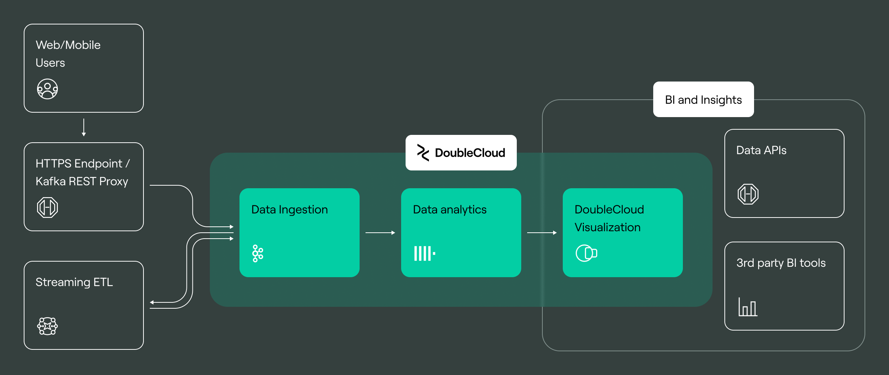
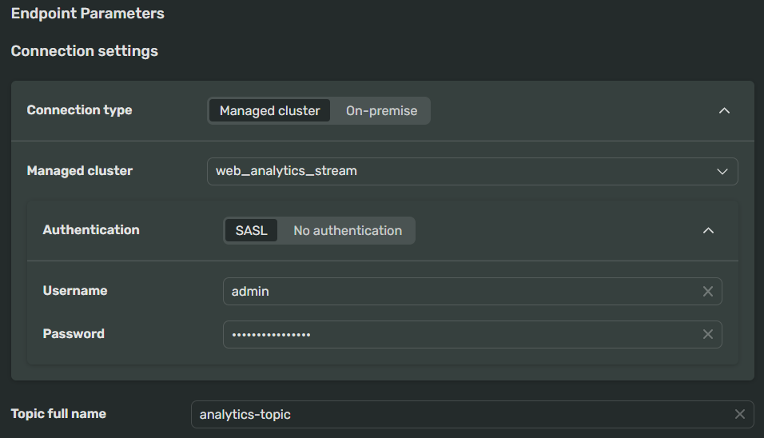
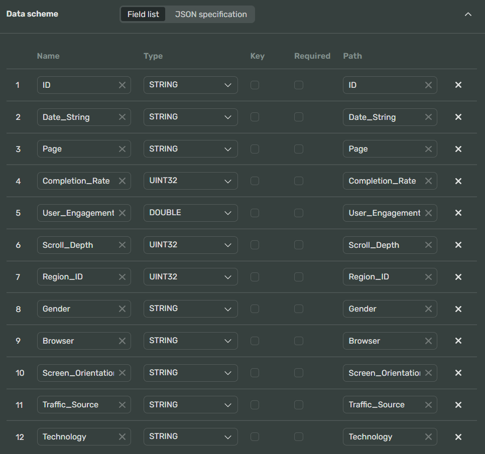
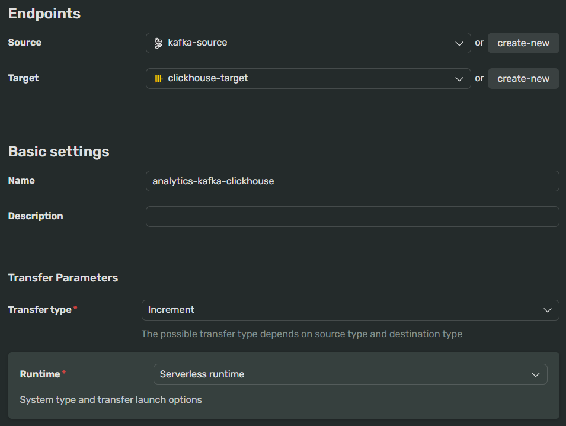
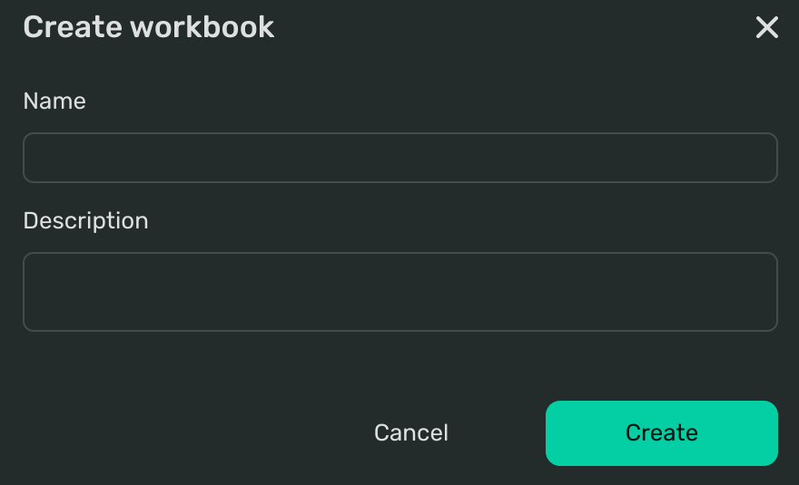
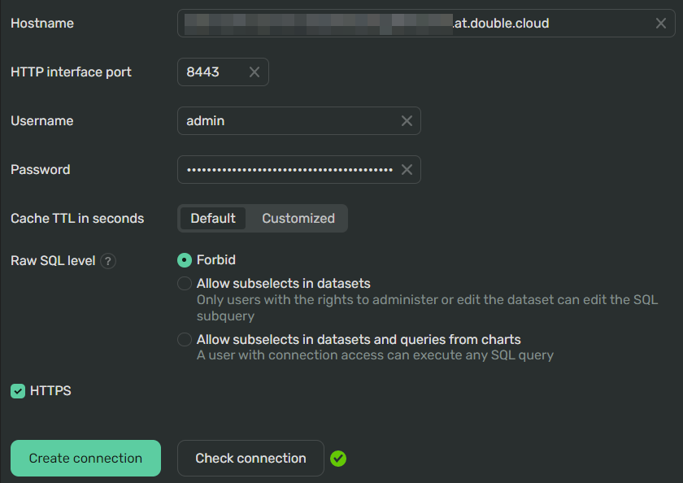
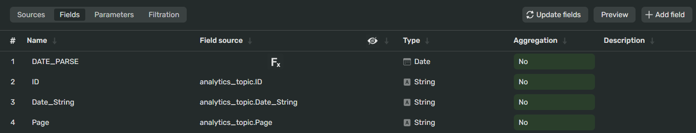
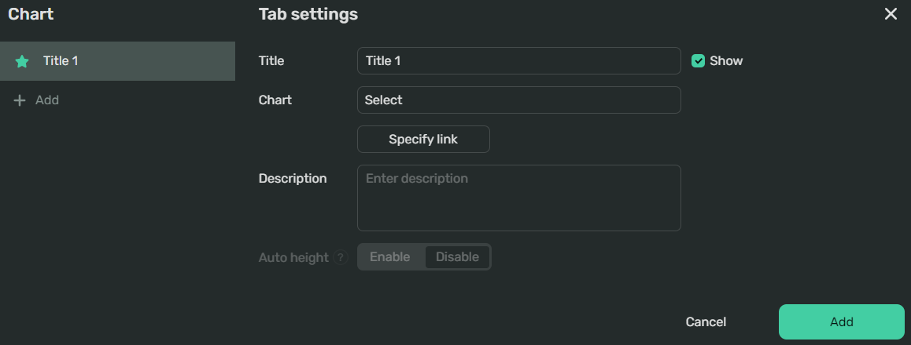
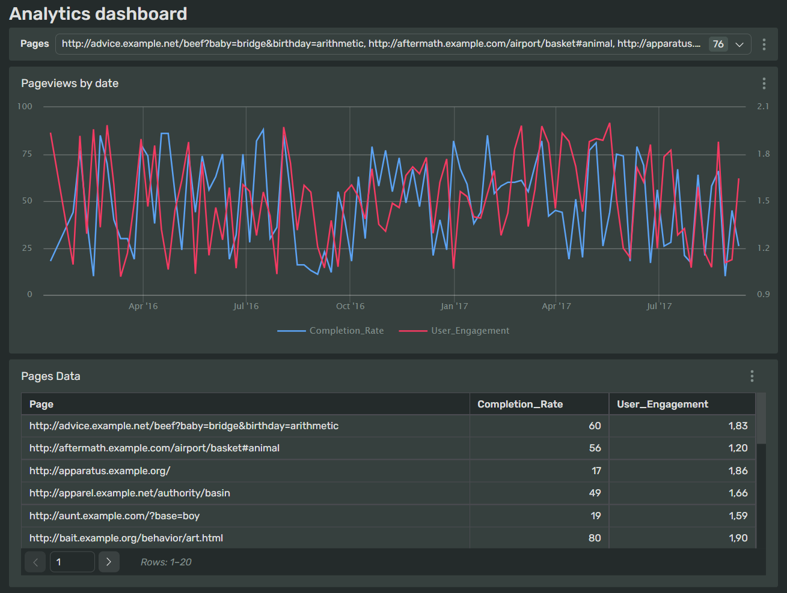

Combine Apache Kafka® and ClickHouse® to create data streams and visualizations
Modern organizations have a multitude of web-based analytic platforms to choose from that help measure business critical KPI’s. When used correctly, the information gathered allows them to make reliable, date-driven decisions to improve the usability of their applications, improve conversion rates and meet other, key business goals.
In this article, we’re going to show you how to build a real-time data pipeline for web analytics. Before we jump right into the technical details, let's think about the most common requirements and challenges we need to consider when building such a system.
A typical analytics solution will have three main components:
-
A data ingestion layer that accumulates the click stream data coming from the application
-
An analytical database that stores the data and handles the queries
-
A BI tool to easily visualize data, build business reports and dashboards, and generate insights from the data.

Diagram Legend:
-
Users' actions are captured for further analysis as they browse a website or use a mobile application.
-
Events need to be durably stored and quite often need to be transformed or enriched before they can be loaded into an analytical database. Modern event streaming platforms like Apache Kafka® combine the fast ingestion capabilities with a rich ecosystem of components to process and transform your data.
-
(Optional) Perform data transformations, such as joining data from multiple sources, and aggregate it if required. Write results of your transformations into a separate Apache Kafka® topic.
-
ClickHouse® has a built-in Apache Kafka® plugin, developed and supported by an open source community, that allows you to consume messages directly from Apache Kafka®. DoubleCloud also has a managed data transfer tool that you can use instead of the plugin.
-
ClickHouse® supports a lot of open source BI / Data visualization tools like Apache Superset and Grafana, as well as traditional BI tools like Tableau or PowerBI. DoubleCloud also has a BI tool called Visualization letting you build dashboards quickly and easily.
At the end of this tutorial, you'll have a dashboard with charts. Data for these charts will stream from the data source to an Apache Kafka® cluster, then to the Managed ClickHouse® cluster and, after that, to the Visualization connection. You'll see how to build this sequence by following the steps below:
Prepare your workspace
Before you start with this tutorial, you need to install software to use later:
Install the ClickHouse® client.
-
Install Python 3 and pip if you don't have them in your environment. Debian-based systems have Python 3 by default, so you usually need to install
piponly:DEB-basedRPM-basedsudo apt update && sudo apt install python3-venv python3-pipsudo yum install python3-venv python3-pipInstall the requests module :
python3 -m pip install requests -
Take a look at the JSON file that contains 100 objects with sample user visits data. We'll access it later programmatically.
Configure Managed Service for Apache Kafka®
Website and mobile traffic tend to vary a lot during the day. It's prone to unpredictable traffic bursts, so a distributed event streaming platform like Apache Kafka® is a popular architectural choice for the data ingestion layer. In addition to providing throughput scalability and durable storage, an event streaming platform also offers other important advantages:
-
The ability to support multiple independent consumers
-
Replay of captured events when required in the same order they have arrived and perform the data enrichment
-
Transformation and aggregation before it gets loaded into the database.
Create an Apache Kafka® cluster
The first infrastructure entity you need to create is an Apache Kafka® cluster with brokers and at least one topic:
Warning
During the trial period, you can create clusters with up to 8 cores, 32 GB RAM, and 400 GB storage. If you need to raise the quotas, don't hesitate to contact our support.
-
Go to the Clusters page in the console.
-
Click Create cluster in the upper-right corner of the page.
-
Select Apache Kafka®.
-
Choose a provider and a region.
-
Under Resources:
-
Select the
s2-c2-m4preset for CPU, RAM capacity, and storage space to create a cluster with minimal configuration.Understand your Apache Kafka® resource preset
A resource preset has the following structure:
<CPU platform> - C<number of CPU cores> - M<number of gigabytes of RAM>There are three available CPU platforms:
-
g- ARM Graviton -
i- Intel (x86) -
s- AMD (x86)
For example, the
i1-c2-m8preset means that it's an Intel platform 2-core CPU with 8 gigabytes of RAM.You can see the availability of CPU platforms across our Managed Service for Apache Kafka® areas and regions.
-
-
Select the number of zones and brokers. The number of zones is multiplied by the number of brokers and determines the number of hosts. This tutorial creates a cluster with two zones and two brokers.
-
-
Under Basic settings:
-
Enter the cluster Name, for example,
web_analytics_stream. -
Select the version of Apache Kafka® for your cluster from the Version drop-down list. For most clusters, we recommend using the latest version.
-
-
Under Networking → VPC, select the network where you want to create the cluster.
If you don’t need to place the cluster in a specific network, leave the preselected default option.
-
Click Submit.
-
Your cluster will appear with the Creating status on the Clusters page in the console. Setting everything up may take some time. When the cluster is ready, it changes its state to Alive.
Create a topic
When you've created a cluster, create a topic in it:
-
On the cluster's page, go to the Topics tab.
-
Click Create.
-
Under Topic Settings, specify the connection properties:
-
Cleanup policy -
Delete. This policy deletes log segments when their retention time or log size reaches the limit. -
Compression Type -
Uncompressed. We don't need compression for our use case. Let's disable it. -
Retention Bytes -
1048576(1 mb). -
Retention Ms -
600000(10 minutes).
-
-
Specify the Basic Settings:
-
Name
A topic's name. Let's call it
analytics-topic. -
Partitions
A number of topic's partitions. Keep
1to create the simplest topic. -
Replication factor
Specifies the number of copies of a topic in a cluster. This parameter's value shouldn't exceed the number of brokers in the cluster. Let's keep the default setting -
1.
-
-
Click Submit.
Configure Managed Service for ClickHouse®
Now, let's look closer at the database layer. There are plenty of options available among cloud-native and open source solutions, each with its pros and cons, making it hard to choose. To make a good web analytics database, the solution has to be able to ingest data quickly, store it efficiently, and provide fast access to the data using SQL.
ClickHouse® has been built from the ground-up to serve real-time web analytics at the scale of billions of clicks per day.
It features columnar storage with multiple data encoding and compression, SQL support with numerous functions on top of it, and, with the recent support of asynchronous inserts, can handle thousands of inserts per second per node. ClickHouse® is also a multi-leader, so you can write and read data from any node, and data is available to query immediately after insertion.
ClickHouse® is also known for its query processing speed, as fast as single-digit milliseconds in the best-case scenarios, which makes it the best option for latency-sensitive workloads. ClickHouse® can act as Apache Kafka® consumer and producer, which greatly reduces the complexity of the data pipeline.
Create a Managed ClickHouse® cluster
Warning
During the trial period, you can create clusters with up to 8 cores, 32 GB RAM, and 400 GB storage. If you need to raise the quotas, don't hesitate to contact our support.
- Create a ClickHouse® cluster using a method of your choice.
Create a database in the cluster
-
Run the following command in your terminal. It contains the string from the Native interface field on the cluster Overview page:
DockerNative clickhouse-clientdocker run --network host --rm -it clickhouse/<Native interface connection string>The complete Docker command structure
docker run --network host --rm -it \ clickhouse/clickhouse-client \ --host <FQDN of your cluster> \ --secure \ --user <cluster user name> \ --password <cluster user password> \ --port 9440<Native interface connection string> -
Create a database:
CREATE DATABASE IF NOT EXISTS "analytics_db"
Tip
Alternatively, you can use a visual IDE of your choice to connect to a cluster and create a database.
Transfer data between clusters
Now it's time to configure a transfer between your clusters to keep their databases in sync.
To accomplish this task, you need to take three steps:
-
Create a Apache Kafka® source endpoint
This tool will take data from your Apache Kafka® cluster and prepare the data for transfer.
-
Create a ClickHouse® target endpoint.
This tool will receive the processed data from the source endpoint and replicate it correctly to your ClickHouse® database as table lines.
-
Configure and activate a transfer.
This tool will perform the transfer of the data from Apache Kafka® topic to your ClickHouse® database.
Create an Apache Kafka® source endpoint
-
Go to the Transfer page in the console.
-
Click Create → Source endpoint.
-
In Source type, select Kafka.
-
Under Basic settings:
- Enter the Name of the endpoint -
kafka-source.
- Enter the Name of the endpoint -
-
Under Endpoint settings → Managed cluster:
-
Select your Managed Apache Kafka® cluster ID from the drop-down list.
-
Specify Authentication credentials:
-
Your User Name -
admin -
Password for your cluster
-
-
-
Specify the existing Topic full name. In this case, it's
analytics-topic.Your endpoint settings should look as follows:

-
Under Conversion rules:
-
Click + Conversion rules.
-
From the drop-down menu, select the
JSONData format. -
Under Data Scheme, you can provide the schema to ways:
-
Specifying the settings for each field via the UI in the Field list tab
-
Writing or pasting a configuration in the
JSONformat in the JSON tab.
Find the instructions for both methods in the following tabs:
Field listJSON-
Click + Field and specify the following field properties as shown on the screenshot below. You need to specify this information for each field you want to transfer:
-
The Name of the field.
-
The field Type.
-
Provide the Path to redefine the names of columns in the table.
-

Under JSON specification, paste the following into the editor area:
[ { "name": "ID", "type": "string" }, { "name": "Date_String", "type": "string" }, { "name": "Page", "type": "string" }, { "name": "Completion_Rate", "type": "uint32" }, { "name": "User_Engagement", "type": "double" }, { "name": "Scroll_Depth", "type": "uint32" }, { "name": "Region_ID", "type": "uint32" }, { "name": "Gender", "type": "string" }, { "name": "Browser", "type": "string" }, { "name": "Screen_Orientation", "type": "string" }, { "name": "Traffic_Source", "type": "string" }, { "name": "Technology", "type": "string" } ] -
-
-
Keep the other settings unchanged.
-
Click Submit.
Create a target endpoint
-
Go to the Transfer page in the console.
-
Click Create → Target endpoint.
-
In Target type, select ClickHouse.
-
Under Basic settings:
- Enter the Name of the endpoint -
clickhouse-target.
- Enter the Name of the endpoint -
-
In Connection settings → Connection type, select Managed cluster.
-
In Managed cluster, select data_storage from the dropdown.
-
In Authentication, select Default to connect to the cluster as the
adminuser. -
In Database, enter
analytics_db— the name of the database you created earlier. When you activate the transfer on the next step, Transfer will create a table for the transferred data in this database. -
You don't need to specify any other settings for this scenario, so you can click Submit.
Configure and activate a transfer
-
Go to the Transfer page in the console.
-
Select the Transfer tab.
-
Click Create transfer.
-
Under Endpoints:
-
Select the
kafka-sourceSource endpoint. -
Select the
clickhouse-targetTarget endpoint.
-
-
Under Basic settings:
- Enter the transfer Name -
analytics-kafka-clickhouse
- Enter the transfer Name -
-
Under Transfer settings select the
ReplicationTransfer type. It transfers the data and keeps the target database in sync with the source database. -
Under Runtime, keep the default Serverless runtime setting.
Your transfer should look as follows:

-
Click Submit.
It's time to start the data transfer process:
-
In the list of services, select Transfer.
-
Select the Transfer tab.
-
To the right of the transfer name, click → Activate.
After you've activated the transfer, all the data that will appear or is currently present in the source database will be continuously transferred to the target database.
Start the Apache Kafka® REST endpoint
To emulate the work of a real-world application, we will send data through a special REST endpoint :
-
Configure your environment. Create a
.envfile with the following contents:KAFKA_REST_LISTENERS=http://0.0.0.0:8082 KAFKA_REST_BOOTSTRAP_SERVERS=<hostname from the Overview tab>:9091 KAFKA_REST_CLIENT_SECURITY_PROTOCOL=SASL_SSL KAFKA_REST_CLIENT_SASL_MECHANISM=SCRAM-SHA-512 KAFKA_REST_CLIENT_SASL_JAAS_CONFIG=org.apache.kafka.common.security.scram.ScramLoginModule required username="admin" password="<your cluster password>"; -
Navigate to the directory with this file and run the container in a separate terminal:
docker run --network host --env-file .env -it confluentinc/cp-kafka-rest
Keep this terminal open so that the endpoint will receive and send data.
Send data to your Apache Kafka® REST endpoint
After successfully creating your clusters and the REST endpoint, you can now upload data to your DoubleCloud Managed ClickHouse® cluster through Apache Kafka®. This tutorial creates a simple Python script to perform an HTTP query to your REST endpoint:
-
Copy the following code:
send-data.pyimport json import requests headers = { "Content-Type": "application/vnd.kafka.json.v2+json", "Accept": "application/vnd.kafka.v2+json, application/vnd.kafka+json, application/json" } URL = 'https://doublecloud-docs.s3.eu-central-1.amazonaws.com/visits.json' source = json.loads(requests.get(URL).text) for obj in source: # Prepare the the object structure # required by the Kafka® REST endpoint processedData = {"records": [{"value": obj}]} res = requests.post('http://localhost:8082/topics/analytics-topic', # json.dumps() converts an object into a JSON string headers=headers, data=json.dumps(processedData)) print(res)Before you run this script, ensure that your Apache Kafka® REST endpoint and the
analytics-kafka-clickhouseTransfer are running. -
(Optional) Run an Apache Kafka® consumer to see if the data is successfully received by the Apache Kafka® cluster.
DockerNative kcat (DEB)Pull the kcat image available at Docker Hub. This command uses the
1.7.1version, but you can use the latest one:docker pull edenhill/kcat:1.7.1Install kcat from your package repository:
sudo apt install kafkacat -
Run the above script:
python3 send-data.py -
(Optional) Connect to your Managed ClickHouse® cluster to see if the data is transferred:
DockerNative clickhouse-clientdocker run --network host --rm -i -t clickhouse/clickhouse-client \ --host <domain name of the host> \ --secure \ --user <Cluster user name> \ --password <Cluster user password> \ --port 9440 \ -q "SELECT * FROM analytics_db.analytics_topic";<Native interface connection string> --query "SELECT * FROM analytics_db.analytics_topic"
Visualize data
You now have a scalable data ingestion layer based on Apache Kafka® and ClickHouse® as a high-speed and scalable OLAP database.
Now it's time to think about the tools for visual representation of the data and business intelligence.
This section will show you how to visualize your data. The main steps include the creation of main Visualization entities:
- Workbook
- Connection
- Dataset
- Dashboard and charts.
As soon as you pass this stage, you'll complete this scenario, and you'll have an analytics dashboard with real-time updates.
Create a workbook and a connection
Workbooks are visualization environments for your data that contain all other Visualization entities.
-
Open the Visualization page in the console.
-
Click Create → Create workbook in the upper-right corner of the page. You'll see the following dialog:

-
Under Name, type
Analytics. -
Under Description, paste the following:
This workbook contains the visualization toolkit for the BI Analytics use case. -
Click Create.
Now you have a workbook, let's create the first element you need to visualize your data - a Connection. The connections access hosts in your cluster to fetch data for processing and visualization.
-
Click Create → Connection in the upper-right corner of your workbook page.
-
Select ClickHouse®.
-
Specify the connection parameters:
- Hostname. Copy the host's name from the Hosts tab on the information page of your cluster.
- HTTP Interface Port (by default,
8443). - Username and Password for your cluster. You can find them in the Overview tab on the information page of your cluster.
-
Leave other settings unchanged and click Check connection. Your connections settings should look like this:

-
If your connection is ready to operate, click Create connection.
-
In the dialog window, name your connection
data_storage_connectionand click Create.
Configure the dataset based on connection
-
Click Create dataset in the upper-right corner of your connection page.
You'll see the
data_storage_connectionalready selected, and theanalytics_topictable will appear in the workspace on the right. -
Click Save in the upper-right corner of your dataset page, name it (
web_data) and click Create.
At this point, you have a dataset whose data is automatically cast to specific types. Now, you can process this data to prepare it for visualization.
Let's add a calculated field. Calculated fields are helpful when you need to transform data somehow. In this example, we'll use the DATE_PARSE function to convert a string value to the Date type.
-
Go to the Fields tab.
-
Click + Add Field and switch to the Field from source tab.
-
Click + Add Field and stay on the Formula tab.
-
Name your field
DATE_PARSE. -
Type the following to apply the correct data type to the
Date_Stringfield:DATE_PARSE([Date_String]) -
Click Create.
-
Click Save in the upper-right corner.
As a result, the first lines of your dataset might look as follows:

Create charts
-
Click Create → Wizard chart.
-
Select your
web_datadataset from the list. -
Click the chart type field on the right of the dataset section and select the Line chart type.
-
Drag and drop the
DATE_PARSEfield from the Dimensions section to the chart's X slot. The chart will redraw the corresponding axis with values. -
Drag the
Completion_Ratefield to Y and theUser_Engagementto the Y2 slots. At this point, you have the most simple chart ready to operate. -
Click Save.
-
Give a name to your chart, for example,
Pageviews by dateand click Save. -
Go back to your workbook page by clicking Analytics in the breadcrumbs at the top.
The sequence of steps above illustrates how to create most DoubleCloud chart types. Let's add the second chart - a table:
-
Click Create → Wizard chart.
-
Select your dataset -
web_data- from the list. -
Click the chart type field on the right of the dataset section and select Table.
-
Drag and drop the fields to display to the Columns section. We selected
Page,Completion_RateandUser_Engagement.Tip
When your dataset contains a lot of data, it's a good idea to also create a Chart filter to limit the number of visualized records. The dataset in the current example contains 100 lines, so a filter isn't required.
-
Click and enable Pagination. Specify
20records per page. -
Click Save.
-
Give a name to your table, for example
Pages Dataand then click Save. -
Go back to your workbook page by clicking Analytics in the breadcrumbs at the top.
Create a dashboard and add charts
A dashboard is a customizable data display that allows you to create visualization elements, such as charts of different kinds and selectors.
-
Click Create → Dashboard in the upper-right corner of your workbook page.
-
Give a name to your dashboard -
Analytics dashboard, and click Create. -
Click Add → Chart. You'll see the chart placement dialog:

-
Under Chart, click Select and choose the
Pageviews by datechart from the list. -
You'll see the chart's Title appear in the relevant field. To the right, there's the Show checkbox - let's keep it as is.
-
Click Add.
-
Move the chart around the dashboard and resize it if needed.
-
-
Add the
Pages Datachart the same way.
Add selectors
Selectors allow you to filter values of charts on a dashboard. Each selector works only with charts that are in the same tab with it.
-
Click Edit in the upper-right corner of the dashboard.
-
Click Add → Selector.
-
Keep the selection - Based on dataset.
-
Select the
web_dataDataset. -
Select the
PageField. -
Keep the
ListSelector type to display the field values in a drop-down menu. -
Select the Operation -
Belongs to a set. -
Enable Multiple choice.
-
Under Default values, click Select all.
-
Enter the selector name -
Pages. -
Click Add.
-
Click Save in the upper-right corner of the wizard to apply changes.
You can use the selector to choose one or more pages for which you want to see the information on your chart.
At this point, you should have a dashboard that looks like this:

This is the end of the tutorial for using DoubleCloud Apache Kafka® and ClickHouse®, clusters, Transfer, and Visualization. There are lots of other scenarios that you can implement with our service.
Take a look at the list below to learn more about our services: